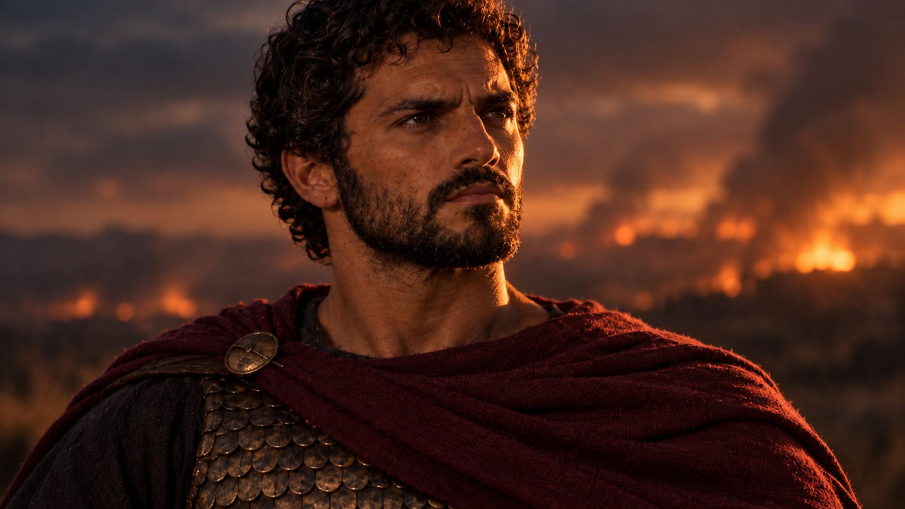

El asedio que encendió una guerra
Una ciudad íbera aliada de Roma. Un general cartaginés de unos veintiocho años. Ocho meses de asedio que cambiarían el destino del Mediterráneo.
Cada capítulo, un momento decisivo de la Segunda Guerra Púnica, rodado como una pieza de cine breve.
Aníbal · Crónicas de fuego es una serie documental sobre la Segunda Guerra Púnica. Cada hecho que se cuenta sale de las fuentes antiguas; cuando las fuentes dudan o no coinciden, la voz lo dice.
Polibio y Tito Livio, contrastados frase a frase, con la cita de cada cifra y de cada episodio dudoso.
Cada plano es una imagen generada con IA a partir de las fuentes y animada como una pieza de cine, con música orquestal propia.
Narrado en valenciano, con subtítulos en castellano e inglés en YouTube.
Cinco momentos del corto. Toca una imagen para verla a pantalla completa.
Sagunto no era la guerra. Era la chispa. Su caída dio a Roma el motivo para declarar la Segunda Guerra Púnica.
La ciudad resistió desde la primavera hasta finales del 219 a. C. sin recibir ayuda de Roma.
Nacido hacia el 247 a. C., llevaba solo dos años al mando del ejército cartaginés en Hispania cuando inició el asedio.
De Sagunto a Zama: el conflicto que decidió quién dominaría el Mediterráneo occidental.